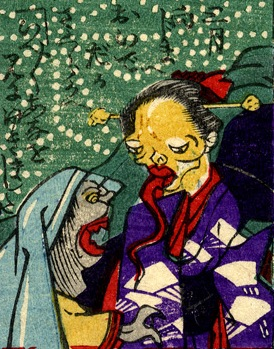

2体の化物。扇柄の着物をきた化物は大きな簪を指し、長い舌を出している。手前には赤い口を大きく開けた化物。詞書には「三月、向島へおいでだか。さくらかえ。いえいえ、穴を見に行きました」とある。
著作者：芳幾近二／出典：親書誌：U426_nichibunken_0229：新作おばけ野噺；シンサクオバケノバナシ／日付：2010／資源識別子：U426_nichibunken_0229_0018_0000
Copyright (c)2010- International Research Center for Japanese Studies, Kyoto, Japan. All rights reserved.